Acqua di Parma started as a small factory in Parma. The first fragrance was created in 1916, Colonia, and at the beginning it was used to perfume gentlemen's handkerchiefs. Colonia became a real symbol of Italian chic among American and European celebrities in the pre-war (1930's) and post-war (1950's) years. Cary Grant and David Niven, Ava Gadner and Eva Turner, later joined by Audrey Hepburn, were among the passionate admirers of Colonia. From a small factory, Acqua di Parma grew into a prominent house with wide range distribution. Alas, the frivolous dictator Fashion and unpredictable and unjust Fortune turned their back to this Italian house – the years of great popularity were followed by the years of struggle for survival and against
oblivion.
At the beginning of 1990’s, three influential Italians, Diego Della Valle (Tod's s.p.a), Luca Cordero Di Montezemolo (Ferrari) and Paolo Borgomanero (La Perla), united their forces in a very patriotic impetus of preserving Italian classic – to restore Acqua di Parma.
They are reproducing the old fragrances, starting new projects, such as aromatherapy line Blu Mediterraneo, fragrances for interiors, leather gallantry Travel Collection… Searching for good investments and positioning at the international market, the three gentlemen signed a contract with a luxurious goods giant, LVMH, which in 2003 came to own the complete Acqua di Parma. The gorgeous Italian style specimen was saved and has successfully continued with its development. Once again Hollywood has turned its face to small, but proud, Acqua di Parma – the affection of their famous predecessors has now been passed on to Kevin Costner, Woody Allen, Sharon Stone…
Some of the Acqua di Parma's fragrances from each collection
BLU MEDITERRANEO
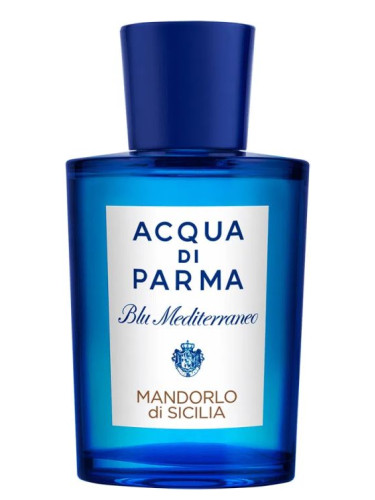
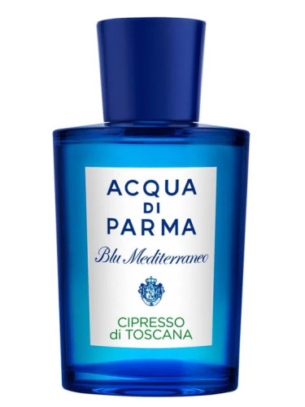
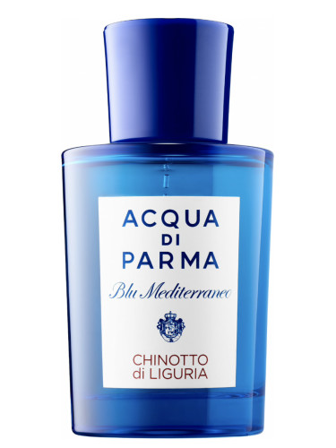
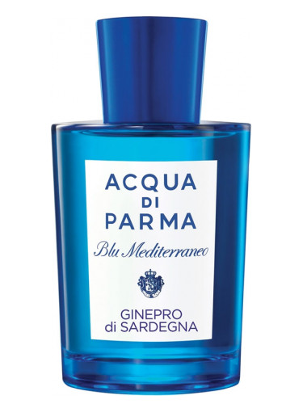
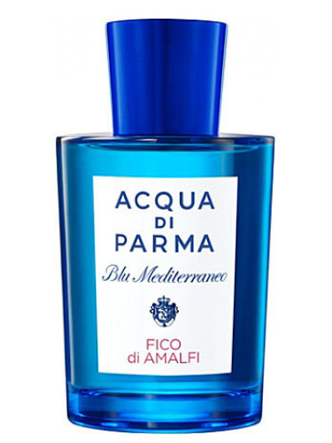
Signatures Of The Sun
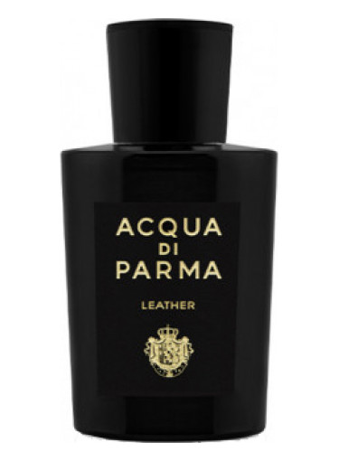
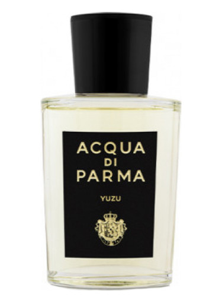
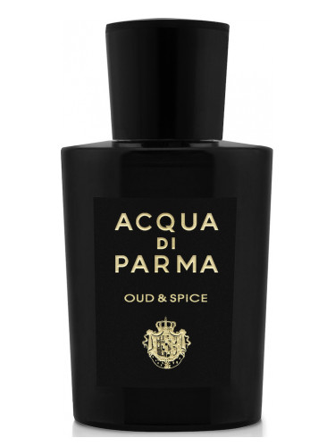
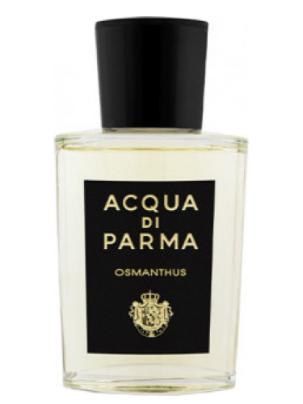
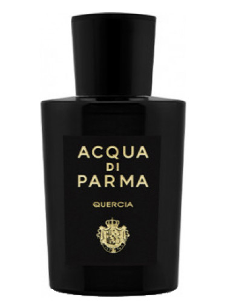
Ingredient Collection
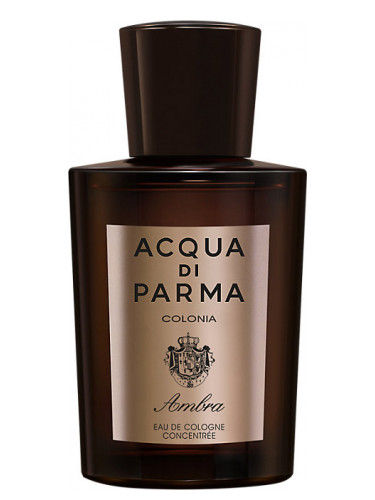
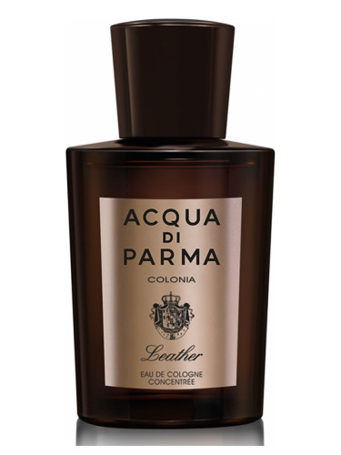
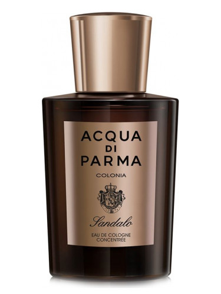
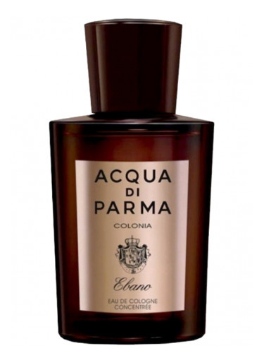
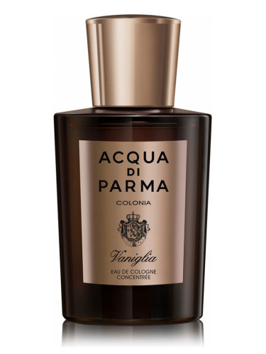
Acqua Nobile
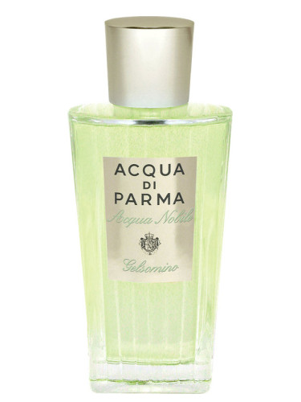
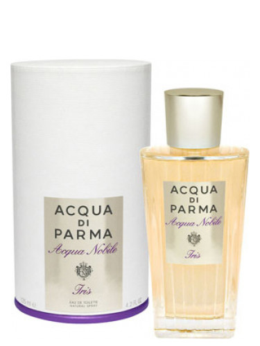
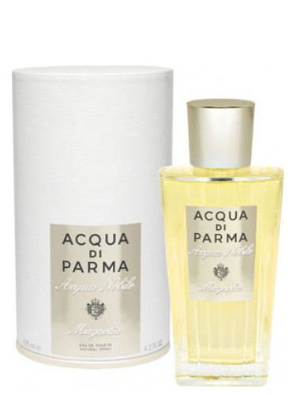
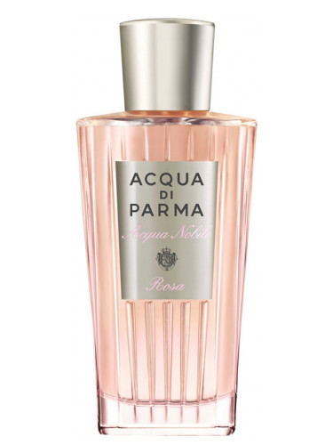